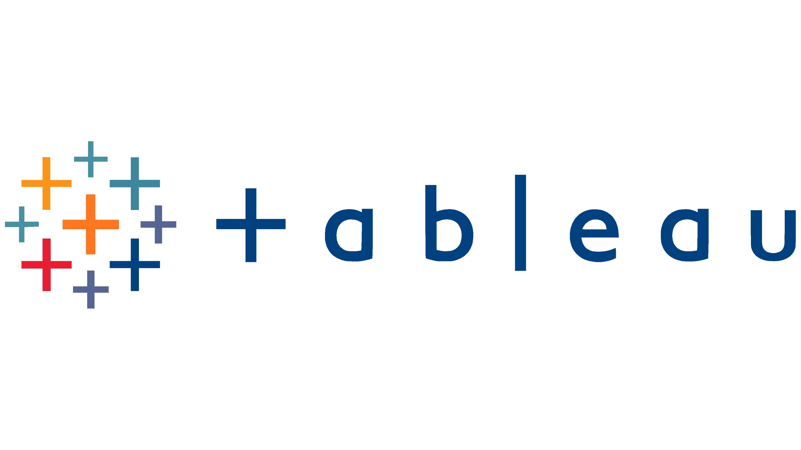
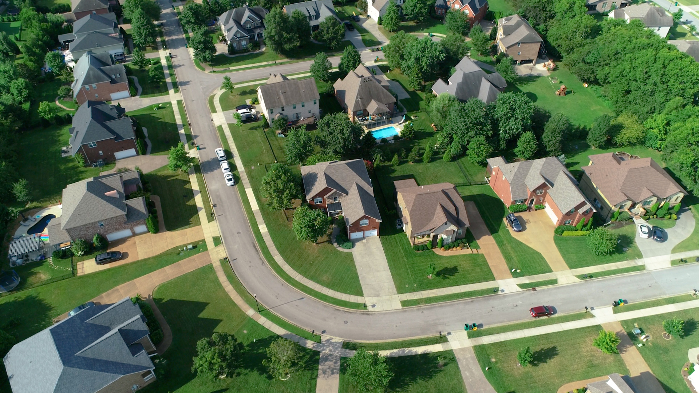

Welcome! A picture is worth a thousand words, they say. Perhaps, an interactive visualization telling the story of data is worth a billion. This port is the compendium of my visualizations in Tableau. It is the repository of my visualizations for some data exploration and analysis. You can check it out for a glance, but please stick around to check other projects.


The prediction of the ultimate conditions of FRP-confined concrete cylinders. This project utilised machine learning algorithms to predict the ultimate conditions of concrete cylinders confined with fibre-reinforced polymers (FRP). An initial database of about 1503 experimental observations was created from the literature. Furthermore, the data was cleaned and manipulated using SQL, resulting in a final database of 859 experimental data from 65 authors published between 1988 and 2022. Three machine learning algorithms – Random Forest (RF), Extreme Gradient Boosting (XGBoost) and Decision Tree (DT) were used to predict the ultimate confined strength and strain of the FRP-confined concrete. The models' performances were evaluated using the R-Square, RMSE, MAE and MAPE. The models performed well, with R-Square ranging from 0.924 to 0.953 for ultimate compressive strength. Furthermore, the R-Square for the strain predictions ranged from 0.796 to 0.906. The XGBoost and RF performed best for the strength and strain predictions, respectively, while the DT performed least for all cases.

Nashville, also known as 'Music City,' has experienced a significant surge in real estate in recent years, attracting numerous individuals and families looking for a new place to call home. The city's popularity is driven by its thriving economy, low cost of living compared to other major cities, and rich cultural offerings. The demand for housing has outstripped the supply, leading to increased property prices and a tight housing market. Despite the high cost of housing, Nashville remains a highly sought-after destination for real estate investment due to its growing economy, job market, and thriving music and entertainment scenes. Do you want to know if it is a smart financial move to buy a house or invest in properties in this Nashville? Data should speak. This project explores the data on real estate properties in Nashville. The data were cleaned and analyzed, classifying the properties based on their use, prices, property appreciation and many other insights. These insights have been published in an interactive Tableau visualization.
Is COVID still amongst us? The waves of COVID-19 seem to have been put to rest, yet data show that there are still cases in different parts of the world. Does it mean the new cases and death occurrences are insignificant? Are people now relaxed because we have many who have been fully vaccinated? Is the media busy with other news more relevant than the "stale" news of the virus? This project presents the analyses of COVID-19 deaths and vaccination data obtained from the OurWorldInData website as of December 2022. The data were explored, and complex queries and analyses were performed in SQL. The Total death count was ranked by continents, and the countries with the highest death as a percentage of their population were identified. Finally, an interactive dashboard was published in Tableau based on the earlier analysis.

Have you ever seen the legendary blockbusters over the years? From Avatar to Starwars, they all have good ratings or votes by viewers. Two high school teenage students in Liverpool argued which had more revenue, Titanic or Starwars. They argued all the way home after school. Conor, a budding Data Analyst, overheard their conversations as he walked across the street to pick up some groceries at the Asian Store. He walked on but determined to know which of the two great movies had more revenue. Often, great movies are not cheap but do huge expenditures during production yield corresponding large revenues? This project explores a database of films from 1980 to 2022, and correlations are drawn between the features using Python. Kindly find out how your favourite movies rank with others and see which features of the movies correlate. Do you want to know which had more revenue, Titanic or Starwars? Check out the analysis and other great insights.
How hot is this room? Temperature is, to a layman, hot or cold and, at best lukewarm. The extreme cases are never of comfort to anyone when it regards shelter. From the condos in the temperate Whittier, Alaska, to the palaces of community chiefs in the tropical Sahel in Africa, everyone seeks solutions to the extreme temperatures. A significant part of the solution to this problem lies in the choice of materials - insulators used for the external walls of buildings. Insulators are means to resist heat flow through them, and a measure of their resistivity is the R-Value. This measure is very useful in thermal control and ultimate energy efficiency in buildings. To calculate this value for walls, this R-Value calculator developed in Python calculates the overall R-Value of a wall by considering the primary inputs of individual material R-Values and thicknesses of the constituent layers.
You are not my type! "I cannot date you! Hey, you cannot be more than a few inches above 5 ft and, again, skinny. Oh my God, we don't even match!" These were the words of the 6 ft 4 tall and big Sarah to the new tech guy across the street in Ontario. The guy moved into the community a few months ago, and now he felt he had found love in Sarah. Both had exchanged contacts at a local community ice hockey game, and they seemed to get along well until now. Brown, who sat at the adjacent table, could not believe an 'overweight,' tall lady would body shame a fit guy if their Body Mass Indices were to be calculated. The Body Mass Index (BMI) is used to classify people's weight, primarily using height and weight. This simple yet essential project is a BMI calculator developed in Python. If only Sarah had calculated her BMI, she could have had exercised some restraint on her words to a 'healthy guy'. It is neither by being tall nor chubby; what is your BMI?
Ever wondered about how data professionals feel about their jobs across the globe? Data Analysts, Data Scientists, Data Engineers, Machine Learning and Artificial Intelligent Experts, amongst other subdisciplines, are lucrative roles in data. However, how much do they earn on average? How happy are they with their roles? Technically, which is their best programming language? This project analyzes the responses of some data professionals to a survey about their careers in data. The responses were analyzed, categorized by country, job title, gender, and salary, amongst other measures, and an interactive dashboard was published in PowerBI. Just have a look at this dashboard to have more insights.
To ride bikes or burn fossil fuels? Some people ride for fun and exercise, while others do it for a cause against the aggravation of global warming. They believe that the use of fossil fuels must be reduced drastically to make any significant headway toward the Net-Zero carbon goal. For instance, the Dutch are famous for their bikes and bike lanes in Europe, as bikes are seen almost everywhere, but what percentage of the population purchases bikes? This project explores bike purchase data in Europe. The data was obtained from Kaggle and analyzed in Excel. Variables such as age, income, gender, marital status, commute distance, and occupation, amongst others, were used for the categorization. Furthermore, Pivot tables were used during the analysis, and a final interactive dashboard describing the influence of these variables on each other was published using Excel.
This archive is the repository of some of my works at Teak-Tech Engineering. The projects range from data exploration and analysis in SQL and Excel to visualizations in Tableau and PowerBI. Please note that only the projects with permission to share are stored in this port.